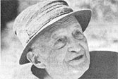
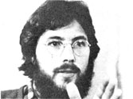

The business of agricultural consulting, says Peter Escher, "is all hard sell. You have to talk to the growers . . . and then follow up to explain your views again. It's really a question of changing people's consciousness." That's the reason Escher visits farms and gardens all up and down the East Coast as a consultant for the Pfeiffer Foundation: to show folks new ways of dealing with their crops' pest and disease problems. The "sale" of organic agriculture isn't always easy, but Escher observes - with some satisfaction - that more and more people are becoming interested in wholistic growing . . . especially those men and women who are trying to produce food on rough terrain or infertile soil.
The Swiss-born horticulturist came to organic gardening by a rather circuitous route. During the Depression, Escher operated his own business in Paris (and did quite well, despite France's troubled financial situation) . . . but he longed for a more worthwhile way to make a living. So Escher came to America and bought a farm in eastern Maryland, where he learned about agriculture the hard way. "The soil on my land was very poor - a heavy clay - but I soon found that dealing with such difficulties is actually the best way to learn how to farm, because your mistakes come home to roost very quickly!"
Through his initial contacts with Dr. Ehrenfried Pfeiffer and other pioneers in biodynamics, the young farmer learned about the soil-improving qualities of compost and other organic materials. Escher then began to cooperate more closely with Dr. Pfeiffer, and together the pair founded Threefold Farm, a research and laboratory facility in Spring Valley, New York.
At present, in the course of his travels, Escher works with farmers, scientists, agricultural agents, and back-to-the-land groups . . . in short, with almost anyone who wants advice on composting, green manuring, and soil improvement. The soft-spoken gentleman doesn't force his knowledge on those who may be skeptical, though. In fact, he's frequently quite guarded about offering his opinions at first: "Sometimes I don't hesitate to take a good look at the situation . . . and then say nothing!"
Escher has a lot to say, however, about our nation's attitude toward the cultivation of the earth, and about how he thinks that ought to change. "You can't just look at botany as if it were no more than a subject described in a book ... you must view a plant as a living being." Often - according to Escher - what's diagnosed as a disease is actually nothing more than the cultivar's discomfort, due to improper planting or cultivation.
The main problem facing the soil conservationist today, he says, is that agriculturists tend to "think in terms of poor soils . . . and that's my beef with the USDA. If we'd try to think in terms of a healthy, productive soil - and take steps to foster and treasure such earth - then we could produce better plants . . . and eat more wholesome food." -JM.
For several years, Frank and Phyllis Dobyns have been contributing their energies to the projects of Save the Children . . . an international relief agency based in Westport, Connecticut. Frank, while serving as a consultant in appropriate technology, spearheaded a project to introduce low-cost, earthen "Lorena" cookstoves to poor households in Honduras and other Central American countries. He also coordinated a housing program, which converted a Far Eastern shantytown into a model community.
Phyllis - who's head of the agency's Health and Nutrition Department - recently directed a successful training program that helped women in Latin American villages deal with their child care responsibilities. She also assists Third World women in pursuing income-producing activities, which not only increase their families' resources, but improve their self-images as well. The nutrition expert's latest project involved putting together supplementary food packets for the malnourished children of "Boat People" refugees. -JM.
Solar energy has a committed supporter in Washington, now that Bruce Anderson has arrived on Capitol Hill. In the Plowboy Interview in MOTHER NO. 52 Anderson spoke at length about the need for governmental support - in the form of tax incentives and research subsidies - of the solar industry. To work more directly toward that goal, the founder of Total Environmental Action (one of the nation's leading solar design firms) and editor of Solar Age magazine has become chairperson of the 32,000-member Solar Lobby, a legislative group that's trying to convince energy officials and lawmakers of the viability of solar power.
So far, Anderson's team, which comprises 18 staffers, has been quite successful. Their most recent victories include an increase in federal tax credits for solar equipment installation, the establishment of the Solar Bank, and the recovery of $50 million that Congress had previously cut from the government's solar budget. The young activist and his staff next plan to lobby for interest-free loans for the construction of solar buildings, government investment in alternative-energy training programs, and the establishment of a Renewable Energy Trust Fund.
As he has often made clear, Anderson strongly believes in the ability of solar energy to alter our lives in positive directions . . . but first, he says, we must inform the public ( including federal policymakers) of sun energy's potential. He advocates the active approach that's embodied in the efforts of the Solar Lobby. "If solar power is going to make it, we need to establish conservation and the use of renewables as twin cornerstones of federal policy. There's a massive education project needed in Washington if we're to get Congress to see solar and renewable energy as its most urgent pieces of unfinished business." - JM.
A short film produced by the Department of Energy and the EPA, "Solar Energy: The Great Adventure", features well-known actor, ecologist, and organic gardener EDDIE ALBERT (the author of "Civilization Rests on Topsoil" in MOTHER NO. 63). . . . Historian WILLIAM IRWIN THOMPSON - who wrote Darkness and Scattered Light (see "The Metaindustrial Village" in issue 30) and founded the Lindisfarne Association - has published a new book entitled The Time Falling Bodies Take to Light (St. Martin's, $14.95), which offers a look at the development of human consciousness in terms of myth and history .... Goddard College's 1981 Summer Institute for Social Ecology - in Plainfield, Vermont - will offer as visiting lecturers BRUCE ANDERSON (see the preceding story), KARL HESS (interviewed in MOTHER NO. 3?), and permaculturist BILL MOLLISON (subject of the Plowboy Interview in issue 66).-JM.
|
|
 |
 |